About
About Projects
Projects Books
Books Games
Games Stories
Stories Store
Store Notes
Notes How-to
How-to
The world through the eyes of a socially anxious skeleton named cee. Mindbird is a project that sheds light on the thoughts and fears of people with anxiety.
This is a project that I would like to expand into a book, or comic series.
The characters of Mindbird are...
 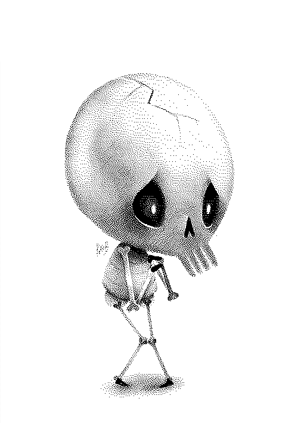
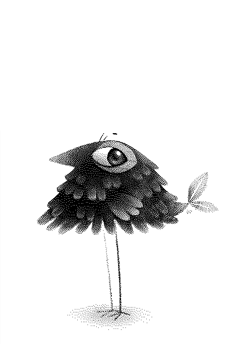
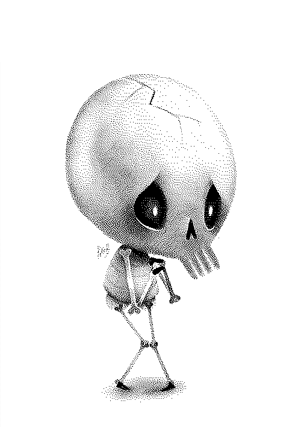
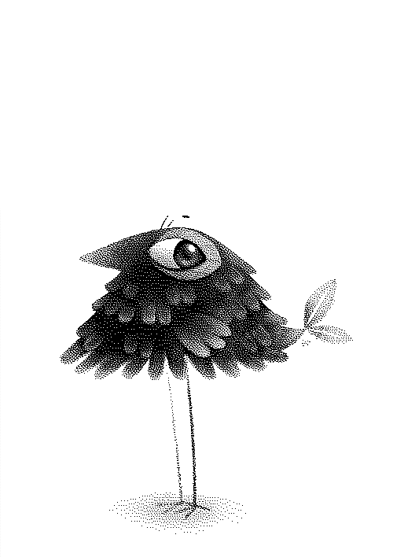
 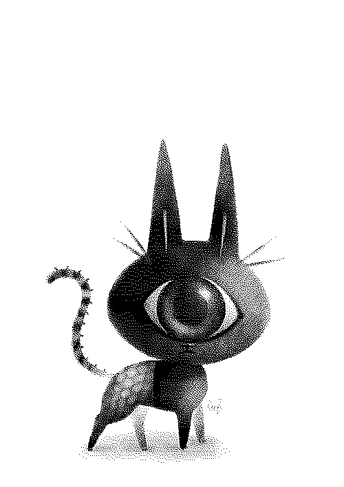
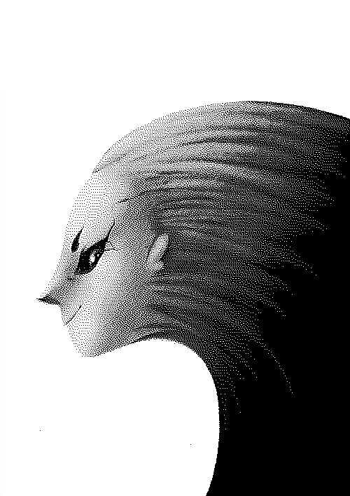
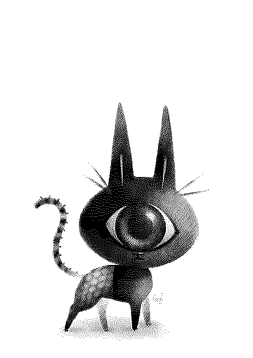
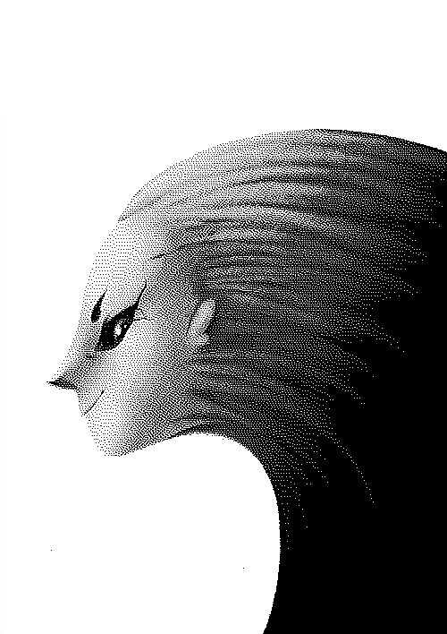
Artwork
 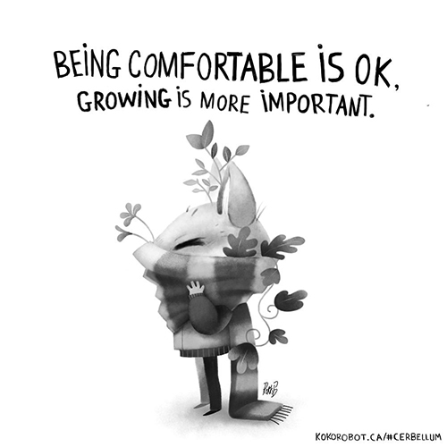
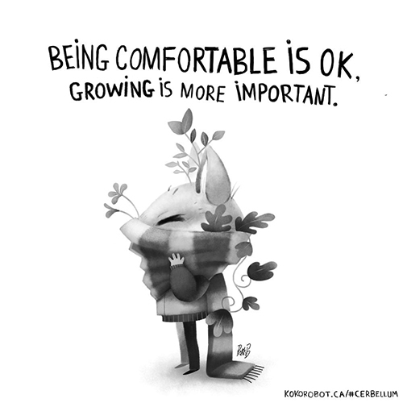
 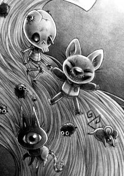
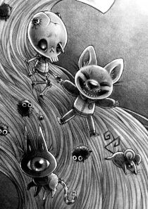
Other illustrations
- Step back[160 KB]
- Bake some friends[102 KB]
- Don't hide what's inside[79.7 KB]
- Fermentation[169.5 KB]
- Viktor is walking (gif)[181.6 KB]
- Forgiveness[241.7 KB]
- Who we are[212 KB]
- Silence is okay[232.9 KB]
- Be a burrito[225 KB]
- Keep calm, don't overanalyze[249.1 KB]
- Start small[218.2 KB]
- Books[271.7 KB]
- Weird arms[258.6 KB]
- Everyone is complex[347.3 KB]
- Friendship pickle[82.5 KB]
- Ribbit[155 KB]
- King of the log[237.5 KB]
- Who are they?[55.5 KB]
- Viktor's curse[169.3 KB]
- Worthy of love[91.4 KB]
- Delivering words[114.8 KB]
- Skin[40.4 KB]
- No inner thoughts[43.4 KB]